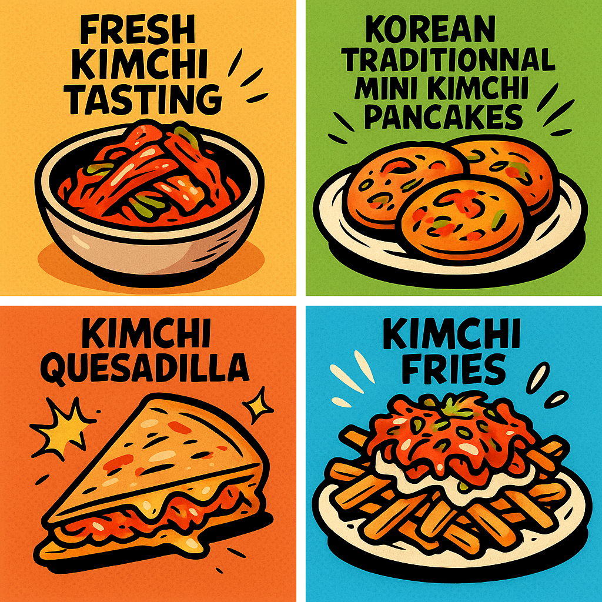

📍 Craft Beer Garden #imaimoze, Mostar
📆 July 18-19 | 🕖 18:00 - 21:00
🥬🌶️ Join us for a playful and tasty exploration of Korea’s favorite flavor with free kimchi tasting and a delicious lineup of kimchi-inspired dishes:
🍻 Perfectly paired with local craft beers, discover a new favorite flavor this summer!
What is Kimchi? Kimchi (김치) is a traditional Korean fermented vegetable dish, usually made with napa cabbage and Korean radishes, seasoned with chili pepper, garlic, ginger, and salted seafood. It’s a staple in Korean cuisine, known for its tangy, spicy flavor and probiotic health benefits. Kimchi is served as a side dish with almost every Korean meal and can also be used in cooking to add depth and spice.